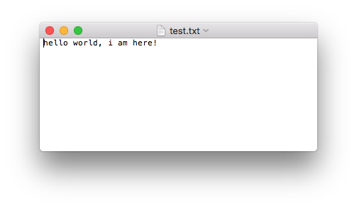
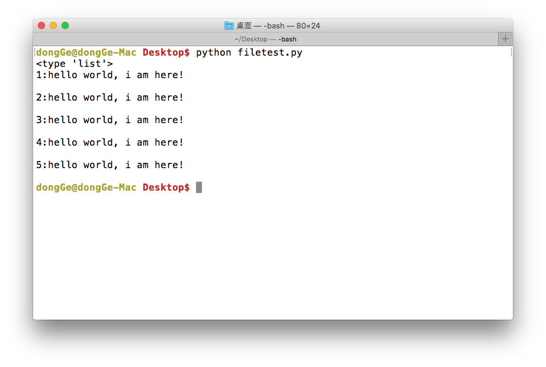
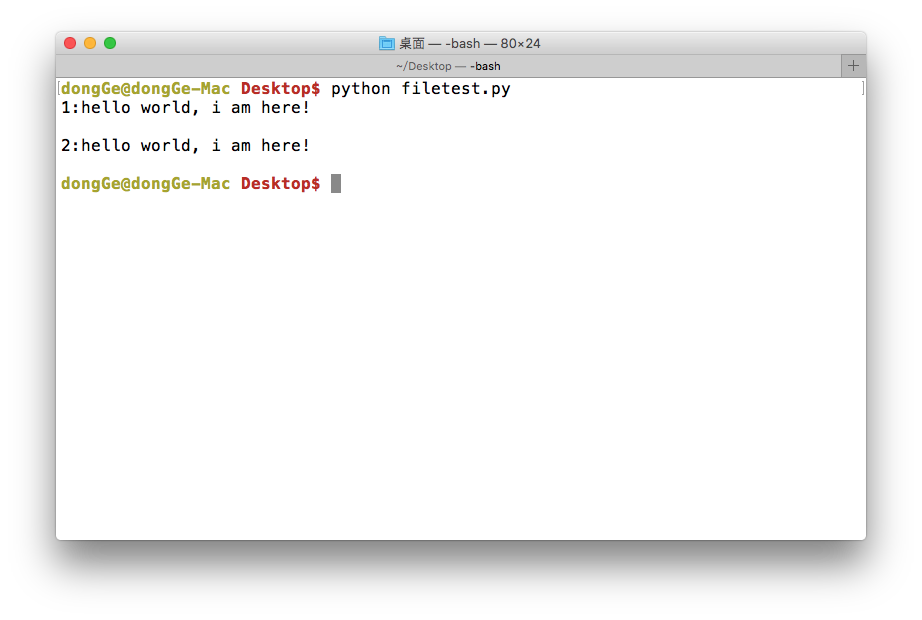

文件的打开与关闭
想一想：
如果想用word编写一份简历，应该有哪些流程呢？
- 打开word软件，新建一个word文件
- 写入个人简历信息
- 保存文件
- 关闭word软件
同样，在操作文件的整体过程与使用word编写一份简历的过程是很相似的
- 打开文件，或者新建立一个文件
- 读/写数据
- 关闭文件
<1>打开文件
在python，使用open函数，可以打开一个已经存在的文件，或者创建一个新文件
open(文件名，访问模式)
示例如下：
f = open('test.txt', 'w')
说明:
| 访问模式 | 说明 |
|---|---|
| r | 以只读方式打开文件。文件的指针将会放在文件的开头。这是默认模式。 |
| w | 打开一个文件只用于写入。如果该文件已存在则将其覆盖。如果该文件不存在，创建新文件。 |
| a | 打开一个文件用于追加。如果该文件已存在，文件指针将会放在文件的结尾。也就是说，新的内容将会被写入到已有内容之后。如果该文件不存在，创建新文件进行写入。 |
| rb | 以二进制格式打开一个文件用于只读。文件指针将会放在文件的开头。这是默认模式。 |
| wb | 以二进制格式打开一个文件只用于写入。如果该文件已存在则将其覆盖。如果该文件不存在，创建新文件。 |
| ab | 以二进制格式打开一个文件用于追加。如果该文件已存在，文件指针将会放在文件的结尾。也就是说，新的内容将会被写入到已有内容之后。如果该文件不存在，创建新文件进行写入。 |
| r+ | 打开一个文件用于读写。文件指针将会放在文件的开头。 |
| w+ | 打开一个文件用于读写。如果该文件已存在则将其覆盖。如果该文件不存在，创建新文件。 |
| a+ | 打开一个文件用于读写。如果该文件已存在，文件指针将会放在文件的结尾。文件打开时会是追加模式。如果该文件不存在，创建新文件用于读写。 |
| rb+ | 以二进制格式打开一个文件用于读写。文件指针将会放在文件的开头。 |
| wb+ | 以二进制格式打开一个文件用于读写。如果该文件已存在则将其覆盖。如果该文件不存在，创建新文件。 |
| ab+ | 以二进制格式打开一个文件用于追加。如果该文件已存在，文件指针将会放在文件的结尾。如果该文件不存在，创建新文件用于读写。 |
<2>关闭文件
close( )
示例如下：
# 新建一个文件，文件名为:test.txt
f = open('test.txt', 'w')
# 关闭这个文件
f.close()
文件的读写
<1>写数据(write)
使用write()可以完成向文件写入数据
demo:
f = open('test.txt', 'w')
f.write('hello world, i am here!')
f.close()
运行现象:

注意：
- 如果文件不存在那么创建，如果存在那么就先清空，然后写入数据
<2>读数据(read)
使用read(num)可以从文件中读取数据，num表示要从文件中读取的数据的长度（单位是字节），如果没有传入num，那么就表示读取文件中所有的数据
demo:
f = open('test.txt', 'r')
content = f.read(5)
print(content)
print("-"*30)
content = f.read()
print(content)
f.close()
运行现象：
hello
------------------------------
world, i am here!
注意：
- 如果open是打开一个文件，那么可以不用谢打开的模式，即只写
open('test.txt') - 如果使用读了多次，那么后面读取的数据是从上次读完后的位置开始的
<3>读数据（readlines）
就像read没有参数时一样，readlines可以按照行的方式把整个文件中的内容进行一次性读取，并且返回的是一个列表，其中每一行的数据为一个元素
f = open('test.txt', 'r')
content = f.readlines()
print(type(content))
i=1
for temp in content:
print("%d:%s"%(i, temp))
i+=1
f.close()
运行现象：

<4>读数据（readline）
f = open('test.txt', 'r')
content = f.readline()
print("1:%s"%content)
content = f.readline()
print("2:%s"%content)
f.close()

想一想：
如果一个文件很大，比如5G，试想应该怎样把文件的数据读取到内存然后进行处理呢？
文件的随机读写
<1>获取当前读写的位置
在读写文件的过程中，如果想知道当前的位置，可以使用tell()来获取
# 打开一个已经存在的文件
f = open("test.txt", "r")
str = f.read(3)
print "读取的数据是 : ", str
# 查找当前位置
position = f.tell()
print "当前文件位置 : ", position
str = f.read(3)
print "读取的数据是 : ", str
# 查找当前位置
position = f.tell()
print "当前文件位置 : ", position
f.close()
<2>定位到某个位置
如果在读写文件的过程中，需要从另外一个位置进行操作的话，可以使用seek()
seek(offset, from)有2个参数
- offset:偏移量
- from:方向
- 0:表示文件开头
- 1:表示当前位置
- 2:表示文件末尾
demo:把位置设置为：从文件开头，偏移5个字节
# 打开一个已经存在的文件
f = open("test.txt", "r")
str = f.read(30)
print "读取的数据是 : ", str
# 查找当前位置
position = f.tell()
print "当前文件位置 : ", position
# 重新设置位置
f.seek(5,0)
# 查找当前位置
position = f.tell()
print "当前文件位置 : ", position
f.close()
demo:把位置设置为：离文件末尾，3字节处
# 打开一个已经存在的文件
f = open("test.txt", "r")
# 查找当前位置
position = f.tell()
print "当前文件位置 : ", position
# 重新设置位置
f.seek(-3,2)
# 读取到的数据为：文件最后3个字节数据
str = f.read()
print "读取的数据是 : ", str
f.close()
文件的重命名、删除
有些时候，需要对文件进行重命名、删除等一些操作，python的os模块中都有这么功能
<1>文件重命名
os模块中的rename()可以完成对文件的重命名操作
rename(需要修改的文件名, 新的文件名)
import os
os.rename("毕业论文.txt", "毕业论文-最终版.txt")
<2>删除文件
os模块中的remove()可以完成对文件的删除操作
remove(待删除的文件名)
import os
os.remove("毕业论文.txt")